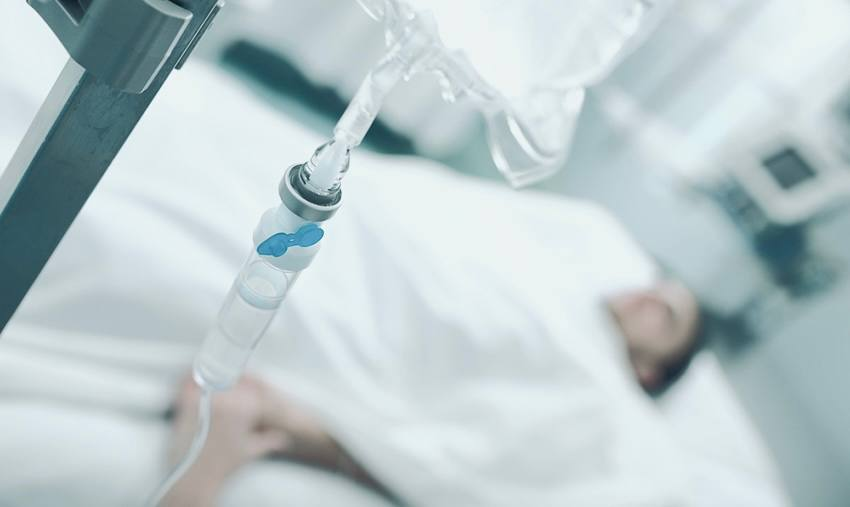

+380(97) 369 76
65
+380(97) 369 76
65Лечение пивного алкоголизма в Одессе
Вылечиваем алкогольную зависимость с 100% случаев
Работаем в Одессе, Киеве, Львове, Харькове, Днепре, Запорожье, Черноморске, Каменском


Бесплатная консультация, работаем круглосуточно 24/7
Вылечиваем алкогольную зависимость с 100% случаев
Работаем в Одессе, Киеве, Львове, Харькове, Днепре, Запорожье, Черноморске, Каменском
Пивной алкоголик - это человек у которого вследствие бесконтрольного и частого употребления пивных напитков развилась наркологическая болезнь под названием пивной алкоголизм. Зависимый на пивной алкоголизм имеет ряд особенностей и отличий при сравнении с зависимостью другой этиологии. Значительным отличием при лечении пивного алкоголизма является медикаментозная терапия которая направленна на восстановление адекватной работы печени, сердца и почек. Часто пивной алкоголик прикрывает свою зависимость защищая свою очередную попойку именно тем что таким способом лечит плохое настроение , стресс , нервозность и бессонницу а низкий процент спиртного в напитке не вредит его здоровью.
Пивная зависимость давняя проблема с которой сталкиваются Одесские врачи наркологи в своей практике. При лечении любой формы пивной зависимости самое главное это сломать созданные ложные убеждения пациента которые направленны на защиту и прикрытие патологической тяги к пиву. Психотерапевтическая помощь таким пациентам необходима после адекватного курса детоксикационной терапии для снятия алкогольной интоксикации вызванного бесконтрольным и частым злоупотреблением спиртного.
Главные симптомы пивного алкоголизма это:
Лечение пивного алкоголизма является комплексной работой , включая в себя несколько основных этапов в лечении зависимости.
К первому этапу в лечении пивного алкоголизма относится: оценка состояния пациента врачом наркологом , постановка диагноза , уточнение формы зависимости а так же первичная диагностика в которую входит оценка работы функций основных органов и систем. На первом этапе в лечении пивного алкоголизма важным моментом может быть длительность стадии алкогольной зависимости в которой находится пациент. Чем дольше пациент находится в зависимости тем сильнее она прогрессирует и тем тяжелее будет ввести пациента в состояние длительной трезвости.
На втором этапе в лечении пивного алкоголизма выступает медикаментозная инфузионная терапия для снятия алкогольной интоксикации (капельница от алкоголя на дому или в стационаре). Второй этап один из самых важных моментов в лечении пивной алкогольной зависимости ведь именно на втором этапе начинается лечение алкоголизма. С помощью капельницы от алкоголя пациенту “чистят” кровь , выводят токсины , нормализуют работу всех органов и систем, а так же снимают патологическую тягу к спиртным напиткам. Второй этап это главный этап в восстановлении самого пациента и выведение его из запойного состояния.
Третий этап - это кодирование от алкоголизма , кодирование от алкоголизма при пивной зависимости происходит одним из трех основных методов:
Пациенты которые осознано прошли кодирование от алкогольной зависимости на 90% больше имеют шанс войти в пожизненную ремиссию чем те пациенты которые отказались от должного лечения. Именно на этапе кодирования от алкоголя пациент признает и принимает свою болезнь , именно тут мы останавливаем зависимость.
Четвертый этап в лечении пивного алкоголизма - это длительная психотерапия которая направленна на объяснения и донесения плюсов трезвой жизни , формирование отвращения к любым спиртным напиткам на психологическом уровне а так же смену ложных убеждений которые сформировались в следствии длительного злоупотребления пивом.
К основным причинам развития пивного алкоголизма относится - генетическая предрасположенность , высокий уровень стресса , низкий уровень осознанности проблемы самим пациентом , высокая токсичность пива , сильная пропаганда алкогольных напитков , легкая доступность алкоголя , психические расстройства. Помните что нет основной проблемы которая отвечает за развития самой зависимости , зависимость это многофакторное заболевание которое развивается по причине большого количества компонентов , если проблема зависимости коснулась вашей семьи - проконсультируйтесь с Одесским врачом наркологом по номеру 050-021-69-57.
Выйти из запоя на дому или в стационаре можно обратившись к врачу наркологу по номеру 050-021-69-57. Доктор проведет комплексную диагностику и лечение , поставит диагноз , определит форму зависимости , снимет кардиограмму и проверит сердца. Если пациент находится в длительном запои ему поставят капельницу от алкогольной интоксикации , проведут комбинированное инфузионное вливание, проведут “очистку” крови от токсинов и шлаков а так же с помощью капельницы от алкоголя снимут патологическое влечение к спиртным напиткам включая пиво , тем самым остановят бесконтрольный прием алкоголя и выведут из запоя на дому или в стационаре.
Капельница которую ставят при пивном похмелье отличается от капельницы при выводе пациента из запоя. Важно понимать что похмелье это по сути отравление продуктами распада этанола , а запой это патологическое состояние в которое замешаны нейромедиаторы коры головного мозга по этому лечение кардинально отличается. Основная цель капельница от похмелья это снять острое состояния отравления , восстановить водно-солевой баланс , провести детоксикационную терапию , насытить организма глюкозой , витаминами и аминокислотами а так же ввести препараты для быстрого восстановления печени. Преимущество капельница от алкоголя при лечении похмелья от таблеток в том что капельница от алкоголя позволяет поднять на ноги пациента за считанные часы , полностью нейтрализовать состояния сильной интоксикации и поддержать работу всех органов и систем для дальнейшего восстановления организма.
Для капельницы от алкоголя Одесские врачи наркологи медицинской службы UmbrellaPlus “Безопасная наркология” используют.
Цена капельницы от алкогольной интоксикации включая пивного отравления в Одессе начинается от 1499грн.
| Услуга | Цена |
|---|---|
| Лечение алкоголизма Одесса | От 1499 грн |
| Вывод из запоя Одесса | От 1499 грн |
| Вывод из запоя на дому Одесса | От 1699 грн |
| Капельница от алкоголя Одесса | От 1499 грн |
| Капельница от алкоголя на дому Одесса | От 1699 грн |
| Лечение пивного алкоголизма Одесса | От 1499 грн |
| Лечение женского алкоголизма Одесса | От 1499 грн |
| Кодирование от алкоголизма Одесса | От 3999 грн |
| Кодирование уколом Одесса | От 3999 грн |
| Кодирование от алкоголизма уколом Дисульфирам | От 3999 грн |
| Кодирование от алкоголизма уколом Эспераль | От 5500 грн |
| Подшивка от алкоголя Одесса | От 9999 грн |
| Кодирование по методу Довженко Одесса | От 14999 грн |
Пивной алкоголизм делиться на три стадии:
1.Формирование психологической зависимости - на первой стадии пивного алкоголизма выпивка имеет регулярный характер , идет рост толерантности к пиву (такой пациент начинает пить большими объемами ). На первой стадии алкогольной зависимости пациент прикрывает частое употребления спиртного какими то социальными факторами - на работе устал , стресс , нервы , проблемы со сном. Важно понимать что на первой стадии алкоголизма зависимость редко несет за собой утрату репутационного характера а употребление алкоголя не ежедневное.
2.На второй стадии алкоголизма зависимость прогрессирует и характер употребления становиться практически ежедневный. На второй стадии пивного алкоголизма у пациента начинаются первые органические проблемы такие как - утрата аппетита , отсутствие тошноты и рвоты вне зависимости от объема выпитого , появляются псевдозапойные состояния а так же первые симптомы опохмеления. Так как пиво является гормональным напитком и в нем содержаться в большом объеме фитоэстрогены которые способствуют нарушению гормонального фона человека со всеми вытекающими проблемами - к примеру у мужчины начинает появляться живот по женскому типу , откладывается жировая ткань на бедрах а так же появляются проблемы с потенцией. У женщины в следствии злоупотребления пива начинается нарушаться менструальный цикл, появляются проблемы с возможностью забеременеть а так же повышается уровень тестостерона по причине которого растут волосы по мужскому типу.
Медицинский центр UmbrellaPlus “Безопасная наркология” занимается лечение алкогольной зависимости многие годы имея большой опыт в лечении зависимости (включая пивной алкоголизм). Мы располагаем квалифицированными врачами и современными методиками для достижения длительной ремиссии и формируем отвращения у пациентов к спиртным напиткам на физическом и психологическом уровне.
Что бы обратиться в медицинский центр для помощи в лечении и кодировании при алкогольной зависимости в Одессе - вам нужно позвонить по номеру 050-021-69-57.
Главным признаком женского пивного алкоголизма в сравнении с мужских является - очень высокая скорость прогрессии зависимости с быстрым прохождением всех стадий алкогольной зависимости а так же с развитием анозогнозией и полным отрицанием наличия какой либо психологической или органической проблемы у пациента. Лечение женского пивного алкоголизма это комплексное мероприятие при которой главной целью врача нарколога стоит донести зависимому пациента наличие у него наркологического заболевания а так же создать стойкие условия и сформировать сильное отвращение к спиртным напиткам на психологическом и физическом уровне с помощью капельницы от алкоголя , кодирования от алкоголизма и психотерапевтической помощи. Важно понимать что алкоголизм это хроническое постоянно прогрессирующее наркологическое заболевание которое без должного лечения в ста процентах случаях приводит к ранней деменции , деперсонализации и смерти.
Пивной алкоголизм - наверное одно из самых старых наркологических заболеваний которое назвали “гамбрини́зм”. Современная медицина не относит пивной алкоголизм к отдельному диагнозу но готова расценивать его как одну из форм алкогольной зависимости. Пивной алкоголизм как и любой другой алкоголизм неизлечим но не стоит опускать руки , помните что наша цель сделать так что бы пациент не употреблял алкоголь вообще , а его последующая жизнь после прохождения лечения алкогольной зависимости была абсолютно трезвая. Никакой врач нарколог не научит пить зависимого пациент “как раньше” без социальных проблем и запоев. Если у человека сформировалась вторая стадия алкогольной зависимости ему показана абсолютная пожизненная трезвость так как запойные состояния будут учащаться и прогрессировать, длительность запоев будет удлиняться а выхода из штопорных состояний будут с каждым разом все труднее и тяжелее, в конечном итоге зависимость приводит к ранней смерти от криминальных или органических причин.
Закодироваться от пивного алкоголизма в Одессе можно одним из трех способов:
Кодирование от алкоголизма уколом - дисульфирам или еспераль.
Кодирование от алкоголизма подшивкой ( торпеда ).
Кодирование от алкоголизма с помощью гипноза ( методом Довженко).
Каждый из вариантов кодирования от алкогольной зависимости имеет свои плюсы и минусы , стоит помнить что пациент который идет на кодировку имеет на 90% лучше прогноз в лечении зависимости чем те пациенты которые категорически отказываются и отрицают надобность данной процедуры.
Главным преимуществом в лечении пивного алкоголизма в медицинском центре UmbrellaPlus “Безопасная наркология” это хорошая работа психологов и психиатров направленные на социлизацию зависимых пациентов , донесения им плюсов трезвой жизни а так же на живом примере показывают улучшения их социального и физического состояния. Так же к плюсам UmbrellaPlus можно отнести:
Медицинский Центр UmbrellaPlus “Безопасная наркология” окажет любую наркологическую помощь каждому зависимому пациента , что бы проконсультироваться с врачом наркологом в Одессе - позвоните по номеру 050-021-69-57.
Анонимно

"Ну в хлопців просто золоті руки й світла голова, мене капали Олексій та Владислав, буквально за декілька сеансів я наче заново народився, до цього пив більше 3х тижнів, не міг зупинитись, дуже радий що знайшов саме цих спеціалістів, всім рекомендую"
Анонимно
"В течение нескольких лет я злоупотреблял алкоголь, что привело к увольнению с работы и вызвало у меня мысли о суициде. Понимая, что такой образ жизни неприемлем, я обратился за помощью в клинику "Амбрела". Здесь я смог преодолеть свою зависимость от спиртного благодаря заботливым и опытным врачам, а также эффективной системе лечения. Спустя более года я полностью избавился от желания употреблять алкоголь, и теперь моя жизнь вернулась в норму. Я даже не приближаюсь к спиртному! Благодарю врачей клиники "Амбрела" за их помощь и заботу."
Анонимно
"Я обращался за помощью в различные клиники, пытаясь избавиться от своей зависимости от алкоголя, но без особых успехов. Никак не мог справиться с желанием прибегнуть к бутылке, пока друг не посоветовал мне обратиться в центр "Амбрелла". Я записался на прием и был поражен заботливым отношением к пациентам. Уже прошло два года, и теперь я смотрю на алкоголь с абсолютной равнодушием, активно занимаюсь спортом и улучшил отношения в семье. Благодаря центру "Амбрелла" моя жизнь была спасена от алкогольной зависимости!"
Анонимно

"Хочу выразить свою благодарность врачам из центра алкоголизма "Амбрела" за то, что они буквально спасли мою жизнь. В течение последнего года я сильно увлекался питьем, и все это привело к катастрофическим последствиям. Хотя я ходил на терапевтические сеансы, но безрезультатно. Тогда я нашел адрес клиники "Амбрела" в интернете, изучил отзывы и информацию о центре, и записался на прием. Там мне сразу предложили методику лечения, которая помогла не только справиться с физической ломкой, но и психической зависимостью от алкоголя. Не буду распространяться, скажу только одно - после пребывания в этой клинике я стал другим человеком, и навсегда забыл, что такое привкус алкоголя. Больше меня не тянет на это! Я искренне верю, что в центре "Амбрела" трудятся настоящие целители душ!"
Анонимно
"После сложного развода мой сын начал подавлять свою обиду и горе употреблением алкоголя. Он старался скрывать это от меня, но я, как мать, почувствовала, что что-то не так. В конечном итоге, ситуация стала критической. Моя знакомая посоветовала мне обратиться в клинику "Амбрела". Я была приятно удивлена их работой! Они помогли сыну преодолеть очередной период злоупотребления алкоголем, и с тех пор прошел уже более года, и он совсем не пьет."
Анонимно
"Благодаря вашей помощи, моя семья была спасена. Я с трудом уговорила мужа начать лечение, и последний каплей был пьяное ДТП. К счастью, в аварии никто не пострадал, но это был для него сигнал к действию. Он наконец согласился пройти курс лечения на дому, в стационар не хотел ложиться. Лечение было трудным, и были моменты, когда срыв был настолько близок, но благодаря вашему центру Амбрелла мы справились с этим."
Анонимно
"Для меня эта клиника стала настоящим спасением! Долгое время я упорно отказывался от лечения, уверен был, что со мной все в порядке. Но к счастью, семья уговорила меня попробовать. И сегодня я чувствую себя невероятно счастливым, осознавая, что мне абсолютно не нужен алкоголь. Огромное спасибо за помощь и поддержку, которые я получил здесь! Я благодарен вам за новую возможность жить полноценной и счастливой жизнью!"
Анонимно
"Выражаю благодарность ребятам, которые оказали мне помощь и не отвернулись. Уже 10 месяцев я остаюсь чистой. Благодарю за то, что помогли найти новый путь в моей жизни."
Приезд в течении 60 минут от момента поступления заявки
Наши филиалы есть во всех больших городах Украины.
Мы оказываем профессиональную доказательную медицинскую помощь. Гарантией является наше имя.
Номер телефона:
+380 (97) 369 76 65
+380 (50) 021 69 57
Адрес главного офиса: г. Харьков ул. Сумская 47
Офис вашего города нужно
уточнить
Работаем в: Одессе, Киеве, Львове, Харькове, Днепре,
Запорожье
Telegram: t.me/umbrellaplus
График работы: Круглосуточно